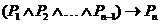
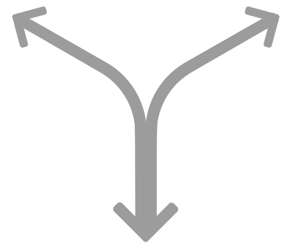

{% extends "base.html" %}

{% block title %}
    <title> HELP </title>
{% endblock %}

{% block content %}
<div class="col-md-1"></div>
<div class="col-md-10">
<center><h3>帮助用户自由学习——传递自我驱动下自学的价值
<br>
帮助用户终身管理个人知识
<br>
坚持可视化方法帮助用户最直观地感受知识
</h3></center><br>
<h1>什么是<strong>知识地图</strong></h1>
<p><strong>知识地图</strong>是将知识逻辑结构可视化并实现自动推理的知识表示模型，人人都可以自由编辑和使用知识地图。
知识地图基于命题逻辑，知识地图中的每个节点都是命题或者命题的集合。命题被特殊的逻辑联结词连接，这些特殊的逻辑联结词称为蕴涵算子。</p>
<br>
<h1>什么是<strong>命题</strong></h1>
<blockquote>
  <p>在现代<a href="https://zh.wikipedia.org/wiki/%E5%93%B2%E5%AD%A6">哲学</a>、<a href="https://zh.wikipedia.org/wiki/%E9%80%BB%E8%BE%91">逻辑学</a>、<a href="https://zh.wikipedia.org/wiki/%E8%AF%AD%E8%A8%80%E5%AD%A6">语言学</a>中，<strong>命题</strong>是指一个判断（陈述）的语义（实际表达的概念），这个概念是可以被定义并观察的现象。命题不是指判断（陈述）本身。当相异判断（陈述）具有相同语义的时候，他们表达相同的命题。例如，<code>雪是白的</code>（汉语）和<code>Snow is white</code> （英语）是相异的判断（陈述），但它们表达的命题是相同的。在同一种语言中，两个相异判断（陈述）也可能表达相同命题。例如，刚才的命题也可以说成<code>冰的小结晶是白的</code>，不过，之所以是相同命题，取决于<code>冰的小结晶</code>可视为<code>雪</code>的有效定义。<br>
通常，命题是指<strong闭判断</strong>，以区别于<a href="https://zh.wikipedia.org/wiki/%E5%BC%80%E6%94%BE%E5%8F%A5%E5%AD%90">开判断</a>，或<a href="https://zh.wikipedia.org/w/index.php?title=%E4%B8%80%E9%98%B6%E9%80%BB%E8%BE%91">谓词</a>。在这种情况下，命题不是真的就是假的。
——Wikipedia</p></blockquote>

<p>记住，命题是语义，而不是具体陈述形式。因此在知识地图中具有相同语义的陈述应该被视为同一节点，在编写新节点之前，首先确保知识地图中没有相同语义但不同陈述形式的节点存在。<br>
在知识地图中，命题由形如<br><center></center><br>
的节点表示。一个命题会有已知、未知、要学等若干状态，命题处于何种状态取决于用户的设定。</p>
<br>
<h1>什么是<strong>蕴涵算子</strong></h1>
<blockquote>
 <p>在<a href="https://zh.wikipedia.org/wiki/%E5%BD%A2%E5%BC%8F%E9%80%BB%E8%BE%91">形式逻辑</a>中，<strong>逻辑运算符</strong>或<strong>逻辑联结词</strong>把语句连接成更复杂的复杂语句。例如，假设有两个逻辑命题，分别是<code>正在下雨</code>和<code>我在屋里</code>，我们可以将它们组成复杂命题<code>正在下雨，并且我在屋里</code>或<code>没有正在下雨</code>或<code>如果正在下雨，那么我在屋里</code>。一个将两个语句组成的新的语句或命题叫做复合语句或复合命题。——Wikipedia
 </p>
</blockquote>
其中
<blockquote>
<p><strong>实质蕴涵</strong>是一种二元的真值泛函的逻辑运算符，它有着如下形式<br>
<center><code>如果A那么B</code></center><br>
这里的A和B是命题。在这种形式的陈述中，第一项这里的A，叫做前件；第二项这里的B，叫做后件。前件的真实是后件的真实的充分条件，而后件的真实是前件的真实的必要条件。这个算子使用右箭头"→"（有时用符号"⇒"或"⊃"）来符号化。——Wikipedia
</p>
</blockquote>
<p>
形如的蕴涵算子称为关于的n元基蕴涵算子。 任意n元蕴涵算子由n元以下基蕴涵算子合取构成。<br>
在知识地图中，蕴涵算子由形如<br><center></center><br>
的符号表示，不同的边表示了不同的蕴涵方式。
</p>
<br>

<h1>如何<strong>使用</strong>知识地图</h1>
<h2>知识管理</h2>
<blockquote>
人类现在碰到的最大的问题就是知识体系是呈梳妆迅速发展的，树越长越大人类的知识越来越丰富体系越来越繁复，但是问题是不同分支不同领域的知识。想要相互关联沟通起来非常困难，个体对知识的了解越来越深入，但对于跨领域的了解却甚少。中国有句古话“隔行如隔山”，这也正是我们时代的挑战，也是我们时代的机会。——斯坦福物理教授 张首晟
</blockquote>
<center></center>
在知识地图中标记出自己的掌握的知识，看看自己知识储备在知识地图中的分布，对学科关系有俯瞰沙盘般的全局把握，看看自己掌握知识分布，从而做出下一步的学习规划。当然你也可以对知识地图中缺乏的学科数据进行编辑，整理记录自己的日常学习，描绘出个性化的知识体系。
<h2>知识导航</h2>
<h3>Deduction</h3>
<p>帮助你了解目标学科的下游应用领域，加强学习的自我需求驱动力。</p>
<h3>Induction</h3>
<p>帮助用户了解一门陌生学科的个性化学习路径，减少在无效资源中探索的时间，提高自学效率。</p>
<h2>资源搜索</h2>
<p>运筹帷幄之中，出招分秒之内。是时候开始寻找精准的学习资源开始学习了。</p>
<br>
<h1>联系我们</h1>
<p>约约约！</p>

</div>
<div class="col-md-1"></div>
{% endblock %}